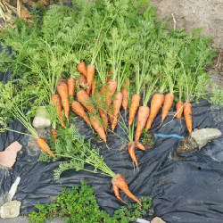
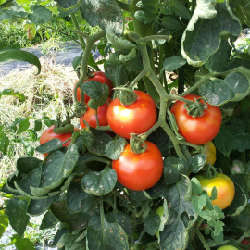
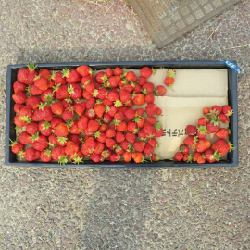

市民農園を借りて農業をやっている経験から書く、農業入門です。

畑でとれた人参です。
牧場入門も参照してください。
まず、土を作ります。どの土地をどの作物に当てるか、計画しながら行いましょう。
土地に牛糞を適切にまいて、スキで平たく伸ばしてください。
牛糞の上から、有機肥料と石灰をまきます。
石灰は、土の酸性を中和するためにまく。畑の作物は酸性を嫌うが、畑の土は作物を作っている間に酸化されて酸性になる。これをアルカリ性の石灰をまいて中和する。
（2017-10-05より。）
注意点として、同じ場所でまた同じ作物を作ると、同じ栄養分を吸収するために、土が駄目になってしまいます。
トマトを植えた次は、同じ場所でトマトを植えるのではなく、玉ねぎを植えるなど、工夫してください。
肥料をまいたら、耕しましょう。
一番楽な方法は、ガソリンで動く耕運機を使うことです。
労力が少なくて済むため、効率的に広い土地を耕すのに向いています。
使う時は、機械に手足がまきこまれないよう、慎重にハンドルを掴んでください。
作った畑に出来るだけ足跡などがつかないように、耕運機を移動させる道順を考えましょう。耕した後はスキなどで綺麗にならします。
疲れますが、クワで耕すことも出来ます。
耕運機の入れない狭い範囲を耕す時などに有効です。
（2018.11.06追記）先日、市民農園で借りていた耕運機が故障中で使えなかったため、クワで畑を耕しましたが、クワで耕すのは楽しいです。
畑に毎日のように行っているわりに、あまり体を動かしたり運動したりしていない自分にとっては、汗をかいて牛糞にまみれながらクワで耕すのは、運動になって楽しかったです。
畑の管理者の方は、「わしらはこれくらいで耕運機なんか使わんでい」と言ってらっしゃいました。年期の入っている方は、言うことが違います。
耕すのが終わったら、ウネを作ってください。スキやクワを上手く使って、畑の原型を作り、ウネとウネの間に道を作りましょう。
この時点で、どこにどんな作物を作るかを計画しておきましょう。
最後に、ビニール製の黒のマルチシートを敷くことで、土の保温と保湿をして野菜を育ちやすくし、光を遮ることで雑草が生えなくします。
マルチシートを適切にカットし、プラスチック製の杭などを使って、ウネに対してマルチシートを敷き、固定します。
マルチシートには、穴が最初から開いているものと、開いていないものがあります。開いていないものの方が、柔軟に穴を自分で開けることが出来ます。あるいは、穴を等間隔で開けることもあります。
種を蒔き、作物を植える前に、適切に穴の開いたマルチシートを敷きましょう！
ウネが完成したら、次は種を蒔くか、苗を植えましょう。
植え付ける時期は、野菜によって違います。トマトやナスやキュウリやピーマンは、夏野菜です。冬には、白菜などを植えます。春でも秋でも作ることのできる野菜もあります。大根などは夏にも冬にも作ることができます。
以下のページを参考にしてください。
種から蒔くことで、たくさんの作物を効率的に作ることが出来ます。
種の何粒かを手にとって、土にくぼみを作って、蒔いたら、水をたっぷりとやりましょう。
種から蒔いた場合は、時に、「間引き」と言うことをする必要があります。
沢山の種から出た複数の芽を少しずつ、間引くことで減らし、最終的には１つにしていきます。
たくさんの種を蒔いた時は、小さな場所からたくさんの芽が出ます。これを生命力の高い一つの芽を残して、他の芽を抜いて間引きをしてやります。こうすることで、たくさんの芽が競合することを避け、強い一つの芽を育てます。ひとつだけの種を蒔いた場合は、そこから芽が出るか出ないか分かりません。たくさんの種を最初は蒔いておいて、後で間引きをします。
苗を植える場合も、種を蒔く場合と同様です。たまに、不良品の苗を売っていることがあるので注意してください。
苗を植えた時は、大きくなるまでに支え棒をつけてやることがあります。キュウリなどの場合は、網を設置して網まで伸ばしてやると、その網にツルが伸びて緑のカーテンのように育ちます。
トマトなどの場合、そのまま育てると横に広がって大きく伸びてしまいます。上に長く育てたい場合は、横に伸びた枝を取る（分け目を取る）必要があります。
雑草と虫・獣との戦いは、永遠の課題です。特に、奪われないようにするために網を張ったり小屋を作ったりします。農業をやっていると、考えていることのほとんどはそれらとの戦いです。雑草は毎日気になったところから抜いていきます。
農園に行った時は、帰る前に必ず水をやります。特に、マルチシートをしていない野菜のウネでは水が乾きやすいため、水をやりましょう。種を蒔いたばかりとか、苗を植えたばかりの野菜には、たくさんの水をやりましょう。
父親と僕の農園の約束事として、「一度にたくさん作業をするよりも、毎日少しずつ作業をやる」というのがあります。実際のところ、僕はあまり農園で働いていません。いつも、行った時は様子を見て、雑草を抜き、収穫し、支え棒や害獣にやられていないかの確認をし、水をやって帰ります。ですが、やることが全くないわけではありません。耕運機をかける時期は耕運機を一緒にかけますし、植え付けもやりますし、小屋を作るために手伝うこともありますし、収穫も一緒にやります。ただ、主に頑張っているのは父親です。自分は手伝い程度の存在です。
一番大きな労働作業は、収穫かもしれません。トマトやイチゴはシーズン中毎日のようにたくさんの実が採れます。また、玉ねぎやサツマイモなどは一度にとても大量にとれます。
採った野菜を自分の家だけで消費することはできません。色んな知り合いにおすそ分けするしかありません。ですが、採れる野菜は大小さまざまで、一部が腐っていたり、農薬を使わない場合は虫に食われることもあります。出来るだけ綺麗な野菜をみんなにあげて、自分たちは少し不出来な野菜を食べることになることが多いです。ですが、採れたては新鮮で、どんなスーパーで買うよりも美味しく、またみずみずしいことが多いです。
野菜別の気付いたことです。

トマトです。
トマトは、直接の雨を遮るために、ビニールと支柱で作った「屋根」を作る必要があります。風で倒れやすいので、台風が来た時などは後で点検などに注意する必要があります。
また、トマトは、倒れやすいため、支柱を作る必要があります。これは、棒と結束バンドを使うことで、簡単に作ることが出来ます。
それから、害獣に狙われやすいため、網を張る必要があります。特にカラスやタヌキに狙われやすいです。

イチゴです。
イチゴは、種を使って増えるのではなく、ランナーと言うツルから増えていきます。
子や孫のランナーを大切に保管しないと、増やすことが出来ないため、ランナーを土を入れたカップに植えて、保管してください。次のシーズンに備えることが出来ます。
また、害獣に狙われやすいので、網を張ってください。特にタヌキに狙われやすいです。
サツマイモは、簡単にたくさん出来て、掘るのも楽しいのですが、ツルが物凄く増えるため、あとあと処分するのが大変です。注意してください。
葉物野菜（ブロッコリーやキャベツなど）は、害虫に狙われやすいので、虫がつかないように網を張る必要があります。
以下は、自分の家で作ったことのある野菜の一覧。本に載っていたものから抜き出したので、もっとたくさんあるかもしれません。
果菜類（実を食べる野菜）
・トマト
・ナス
・キュウリ
・ピーマン
・トウモロコシ
・カボチャ
・ズッキーニ
・オクラ
・ニガウリ
・イチゴ
・スイカ
葉菜類（葉や茎を食べる野菜）
・ホウレンソウ
・コマツナ
・シュンギク
・キャベツ
・ハクサイ
・レタス・サニーレタス・サラダナ
・ガーデンレタスミックス
・ベビーリーフ
・ミズナ
・ネギ
・タマネギ
・ニンニク
・モロヘイヤ
・シソ
・ニラ
・パセリ
・ミツバ
・カラシナ
・ブロッコリー
根菜類（根や地下茎を食べる野菜）
・サツマイモ
・ジャガイモ
・ラディッシュ
・ニンジン
・ダイコン
・カブ
・サトイモ
・ショウガ
豆類（豆を食べる野菜）
・エダマメ
・エンドウ
・ソラマメ
その他
・ツルムラサキ
植物が成長するために必要なのは、リン酸、カリ、窒素です。これを、肥料の三大要素と言います。
野菜や植物によって、カリが多く必要だったり、窒素が多く必要だったりと違います。これらが多くの植物で必要とされる、一般的な肥料の成分です。
多くのホームセンターなどの肥料では、リン酸、カリ、窒素をバランスよくブレンドした肥料が売られています。
牛糞や馬糞にも、リン酸とカリと窒素が含まれています。
また、同じ畑で野菜を作り続けていると、微生物の分布が変わって土が酸性になるため、土をアルカリ性にする石灰を使って土を中和します。人間の耕す畑ではなく自然の生態系の土では、これは自然に行われるため、必要ありませんが、人間の作った畑では作物を作っている間に土が酸性になります。
後日注記：もちろん、植物が生きるためには二酸化炭素と水と太陽の光が必要です。これらがなければ、植物は枯れてしまいます。しかし、植物がしっかりと大きく育つためには、リン酸とカリと窒素が必要で、これは土に含まれています。人間にとっての炭水化物やたんぱく質や脂質が必須の栄養分であり、それ以外にもビタミンやミネラルが必要であることに対応するでしょう。さまざまなことがあるので単純には言えませんが、窒素は白菜やキャベツなどの葉物野菜の葉を大きくし、リン酸はイチゴなどの実を大きくし、カリはジャガイモなどの根やたんぱく質を大きくすることが多いです。
人間が科学技術の力を使って、植物を育てるためには何が必要か調べるうちに、植物は動物とは違う栄養分が必要であることが分かってきました。また、それはリン酸とカリと窒素であることも、分かってきました。
ここから、「わざわざ土で畑を耕さなくても、水の中にリン酸とカリと窒素を溶かして、その水の上で野菜を育てれば、野菜は育つのではないか」と生物学者は考えました。
土を使わず、水にリン酸とカリと窒素を溶かして、その水で野菜を育てることを「水耕栽培」と言います。
水耕栽培には、いくつかのメリットがあります。
１．土を耕す大きな労働や手間が必要ない。
２．クリーンルームで水耕栽培を行えば、害虫もつかず、野菜も汚れないため、綺麗な状態で野菜を出荷できる。
３．水の中の栄養分の状態をコンピュータで自動コントロールできる。
４．クリーンルームの中の温度や光の量を調節することで、季節に関わらず一年中の野菜を育てることができる。
５．日当たりのいい畑に限らず、巨大工場など、どこでも野菜を作ることができる。
最近は、多くの野菜や植物が水耕栽培で作ることができるようになってきています。これにAI技術を組み合わせれば、「人間の手間や労力を排して、自動的に大量の野菜を作る」ことができます。
僕の農園で、ひとつの大きな出来事がありました。
ランナーから増やしたイチゴが収穫時期を迎え、たくさんのイチゴがとれるようになりました。去年のように、「イチゴ天国」になるのではないかと、僕と父親は期待していました。
イチゴは、害獣にやられないようにネットと支柱の棒で小屋を作り、最初のうちはたくさんのイチゴが採れていました。
ですが、ある日、農園に行ってみると、イチゴの実がありません。赤い実が、全部無くなってしまいます。
見ると、害獣が入らないように作ったネットと支柱の中で、一部、棒が折れているところがありました。そこから、何かしらの動物が入ったのです。
最初は、僕と父親はタヌキだと思いました。その棒を修正しても、味をしめた害獣は、今度は棒の下に穴を掘って入りました。
ここで、僕たちはなすすべがなくなり、父親は役所に相談して、ある作戦をしました。それは、「害獣を捕獲する檻の罠を作る」ことです。
役所から、罠となる檻の箱を借り、それを設置しました。父親は、「捕まったら絶対にタヌキ鍋にする」と言っていました。
ここで、タヌキではなく、アナグマだろうということが分かりました。そして、アナグマはキャラメルコーンの匂いが好きだということ（肉の油のようなにおいがするらしい）で、キャラメルコーンと、採れたばかりの新鮮なイチゴを檻の中に入れました。
当初、役所が言うには、イチゴ畑の外に檻を設置して、イチゴの方は杭を打つことで入らないようにできるということでしたが、それでは檻に目もくれず、アナグマはもう一度畑に入りました。
そして、僕たちは檻の入り口のところに檻を設置しました。
そうすると、なんということでしょう。害獣が捕まりました。それは、タヌキやアナグマではなく、テンというイタチのような動物でした。
テンは肉食で、イチゴは食べないため、犯人ではないと言うことでしたが、キャラメルコーンの匂いにつられて入ったのだろうということです。
鳥獣法があるため、捕まった獣は役所にきちんと連絡して、猟師に引き渡して正当な方法で処分しなければなりません。そのため、テンを食べたりすることはできませんし、勝手に逃がすこともできません。犯人ではないテンは、免罪で処分されました。
その後も、アナグマは捕まらず、もう一匹テンが捕まりました。そうこうしているうちに、イチゴのシーズンは終わりになりました。結局、アナグマ捕獲大作戦は失敗に終わりました。一説には、罠に入ったテンが大騒ぎをしたため、恐れをなして畑に入らなくなったのではないかと言うことです。
農業について言えることに、「手で植えた稲は手で刈り取らなければならない」ということが言えます。
これは、稲を植える時の間隔が、手で植えた時はバラバラにばらつくからです。
最初から農業機械で植えた稲は、一定の間隔で植えられるために、その間隔に対応した農業機械で、機械的に刈り取ることができます。
ですが、ここで「ベンダーロックイン」が発生します。クボタの機械とヤンマーの機械では、それぞれの機械によって間隔が異なります。クボタの機械で植えた稲はクボタの機械で刈り取り、ヤンマーの機械で植えた稲はヤンマーの機械で刈り取らなければいけません。
これは農業だけではなくさまざまなところにある問題で、日本の鉄道会社のレールの間隔に対応した鉄道は、そのままでは外国のレールでは動きません。間隔が微妙に違うからです。
ただし、ここでずるをする国があります。中国の鉄道会社などは、「自分たちの鉄道もそのレールの間隔で動くように作る」と言って、安値で鉄道を外国に売ります。ですが、さまざまなシステムが異なるために、正常にシステムが作動せず、混乱をもたらします。Linuxやオープンソースの品質も、これと似たところがあります。UNIXやWindowsのリプレースだけを目指してオープン・フリーにしても、劣悪で使い物にならないのです。こうしたところから、オープンソースがなぜ失敗したのか、考えることができます。
畑は生物学の宝庫です。毎日育つ野菜を見るだけで、植物学のことが良く分かります。
植物の寿命はとても短く、食べられる食べ物はとても貴重です。命の大切さが良く分かります。
植物は決して平等ではありません。不出来なナスや育たない玉ねぎはたくさんあります。それでも、頑張って生きている、というそのことは、今生きている、あるいは過去に生きていた全ての生命に共通しています。
野菜は貴重なだけではなく、ほとんどの場合過剰に生産できます。自分だけではとても全部は食べられません。貴重でありながら過剰に採れることで、分け与えることの大切さと、経済活動の自然さが実感できます。
野菜に優劣はありません。全ての野菜が良い野菜です。野菜が育つのは、全て、その野菜が持っている力ですが、上手くその力を使わなければ野菜は育つことが出来ません。ほとんどすべては育て方によります。ここに、仏教でいう「他力」の概念を見出すことができます。生物は全て自力で生きることはできません。
生物は高度でありながら合理的で、ただその生物が生きるという意味においても、協調して生態系の中で生きていくという意味でも、良く出来ています。あらゆる全ての生物の頂点に立ち、一つの種だけで他全ての生物を滅亡させることはできません。強すぎる生物は、他のためになりません。ある程度弱く、それぞれが頑張らなければ生きられないからこそ、生物は全体が強く、多様性があるのです。強すぎるものはすぐに滅亡します。恐竜は強すぎましたが、いつまでも恐竜の天下は続かないのです。
戦時中、食べ物や物資が不足していた中で、一番食べ物に困らなかったのは、虐げられていた農家だったと言います。
農家は馬鹿ではありません。最後に生きのびるのは農家です。そして、サバイバルやキャンプの知識があれば、自分独りで生きられるでしょう。まるで自衛隊ですね。
サバイバルで必要なものは何か知りたいなら、以下の登山における装備のページが参考になるかもしれません：
また、僕の家の庭には、柿や梅が生っています。
僕の家は比較的庭が広く、親がたくさんの木を植えたために、一時期は巨大な桜が育っていました。
しかしながら、桜はあまりに巨大になりすぎたし、綺麗なのは春だけで、夏などには毛虫がたくさんつきました。そのため、桜は数年前に切り落とし、今では切り株だけが残っています。
僕の家の柿はとてもおいしくて、甘いです。また、梅はたくさんできることが多く、梅酒にしたこともあります。